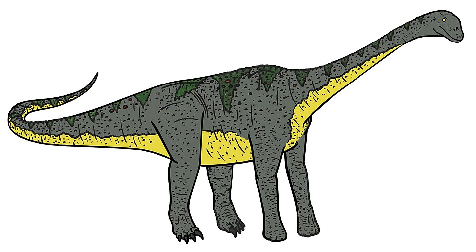

Argentinossauro
Argentinosaurus huinculensis
Período
Viveu durante o período Cretáceo, há aproximadamente 97 a 94 milhões de anos.
Alimentação
Era herbívoro e se alimentava de plantas.
Características
Era um saurópode gigantesco, com pescoço e cauda longos, e está entre os maiores dinossauros terrestres já conhecidos.
Curiosidades
- Seu nome significa “lagarto da Argentina”.
- Seus fósseis foram encontrados na Argentina.
- Seu tamanho é estimado a partir de ossos incompletos, por isso os números variam entre os estudos.